Costa de Almería · Pulpí
Immobilien zum Verkauf in Pulpí
Günstige neue Wohnungen nahe am Meer und am Golfplatz, Wohnungen in erster Meereslinie und Villen nahe den Stränden von San Juan de los Terreros. Hier finden Sie die Immobilien, die wir heute in Pulpí verkaufen, mit einem kurzen Überblick über die Viertel und die echten Kaufkosten.
- 13Immobilien zum Verkauf in Pulpí
- ab 179.000 €für eine neue Wohnung
- ca. 1 Stundezum Flughafen Región de Murcia
- Geodaeine der größten Geoden der Welt
Jetzt zu verkaufen
Immobilien zum Verkauf in Pulpí
Neue Wohnungen mit 1 bis 3 Schlafzimmern, viele mit Pool und nahe am Meer oder am Golfplatz, dazu Bungalows und Villen nahe am Strand. Die Preise sind die heutigen Angebotspreise; fragen Sie uns nach der aktuellen Verfügbarkeit.
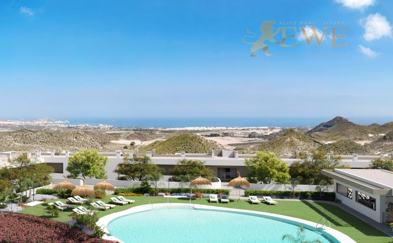
Fertigstellung Ende 2027Pulpí
Modern apartment next to the golf course in Pulpí
179.000 €
1 Schlafzimmer · 1 Bad · 49 m²Ref. EWE3608
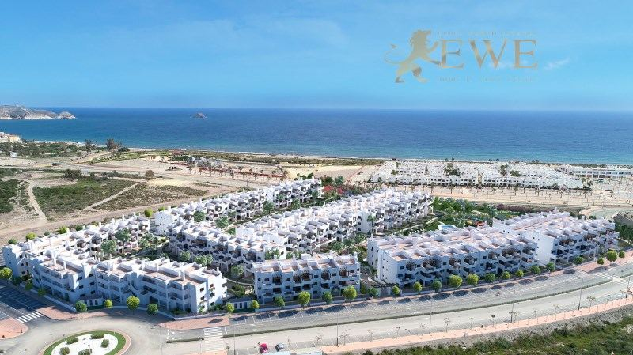
Pulpí
Magnificent apartment on the first line to the sea in Pulpí, Costa de Almería
182.000 €
1 Schlafzimmer · 1 Bad · 43.05 m²Ref. EWE2384
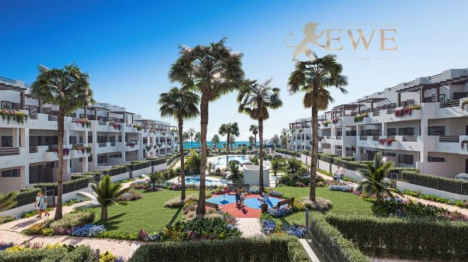
Pulpí
Cosy apartment 200 metres from the sea in Pulpi
182.000 €
1 Schlafzimmer · 1 Bad · 45 m²Ref. EWE3651
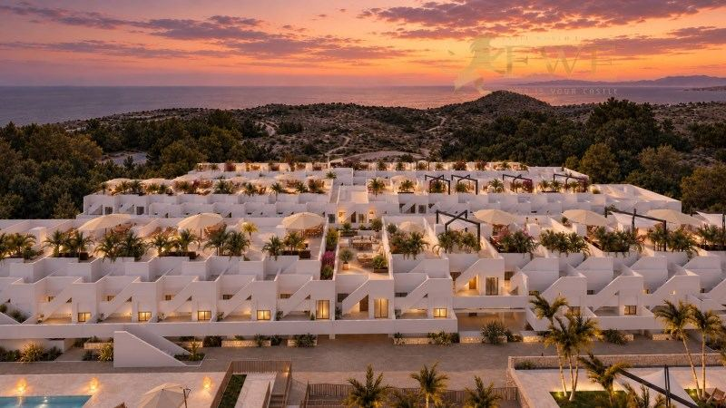
Fertigstellung Dez 2028Pulpí
New apartments with pools and Spa in picturesque Pulpí
199.900 €
2 Schlafzimmer · 2 Bäder · 83 m²Ref. EWE3890
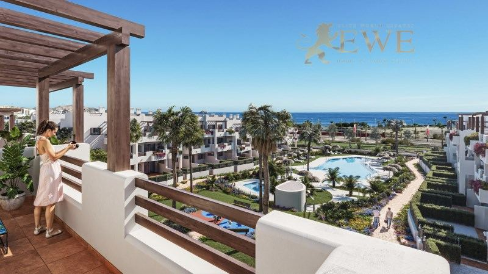
Pulpí
Excellent apartment 500 metres from the sea in Pulpi
212.000 €
2 Schlafzimmer · 1 Bad · 51 m²Ref. EWE3652
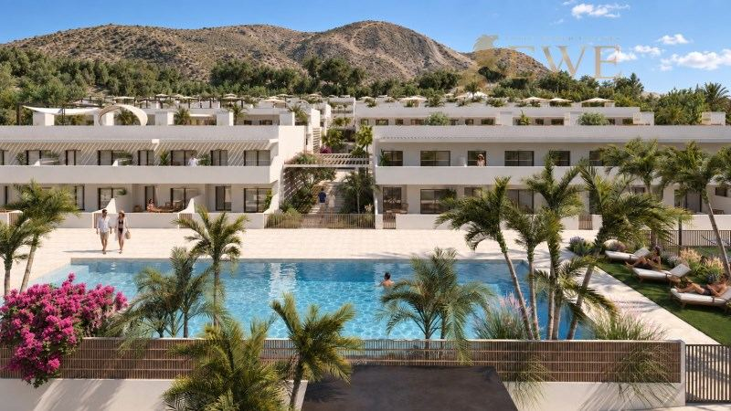
Fertigstellung Dez 2028Pulpí
New apartments with pools and Spa in picturesque Pulpí
229.900 €
3 Schlafzimmer · 2 Bäder · 100 m²Ref. EWE3891
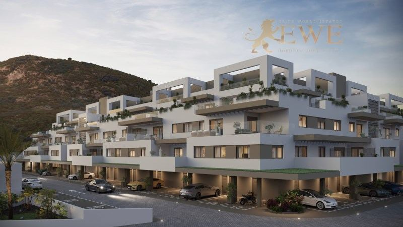
Pulpí
Modern apartment next to the golf course in Pulpí
230.000 €
2 Schlafzimmer · 2 Bäder · 68 m²Ref. EWE3607
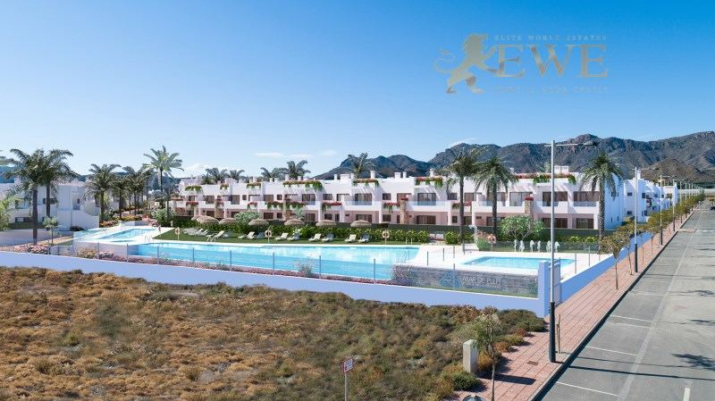
Pulpí
Unique apartments first line to the sea in Pulpí, Costa de Almería
258.000 €
2 Schlafzimmer · 1 Bad · 72 m²Ref. EWE2379
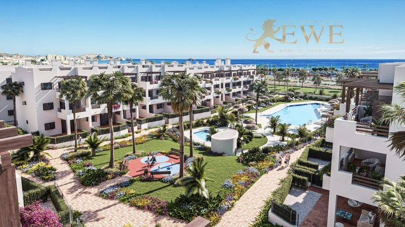
Pulpí
The perfect apartment with a sea view in Pulpi
275.000 €
3 Schlafzimmer · 2 Bäder · 79 m²Ref. EWE3653
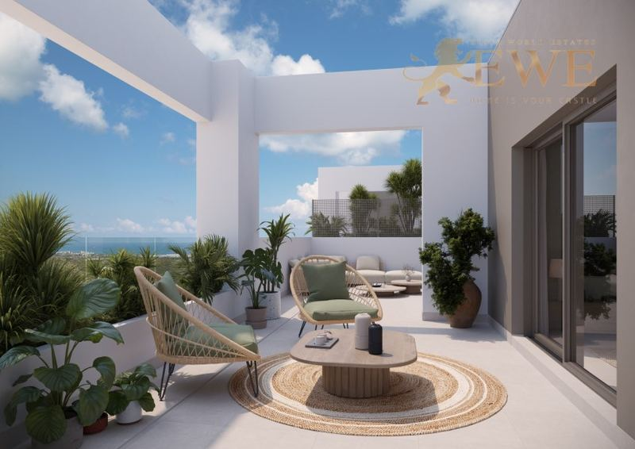
Fertigstellung Ende 2027Pulpí
Spacious apartment near a picturesque golf course in Pulpí
331.000 €
3 Schlafzimmer · 2 Bäder · 87 m²Ref. EWE3609
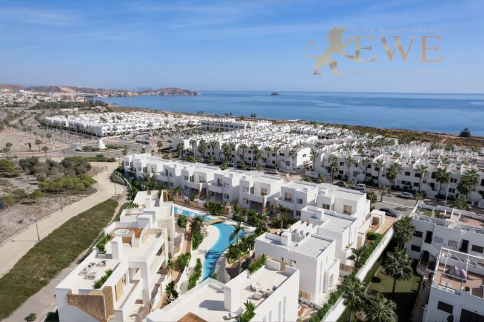
Fertigstellung Dez 2026Pulpí
Magnificent bungalow with jacuzzi just 300 metres from the beach in Pulpí
362.000 €
2 Schlafzimmer · 3 Bäder · 125 m²Ref. EWE3616
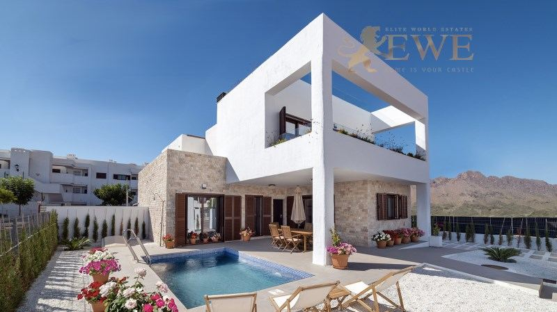
Pulpí
A ready-to-move-in semi-detached villa 400 metres from the beaches in Pulpí
383.000 €
2 Schlafzimmer · 2 Bäder · 228 m²Ref. EWE3687
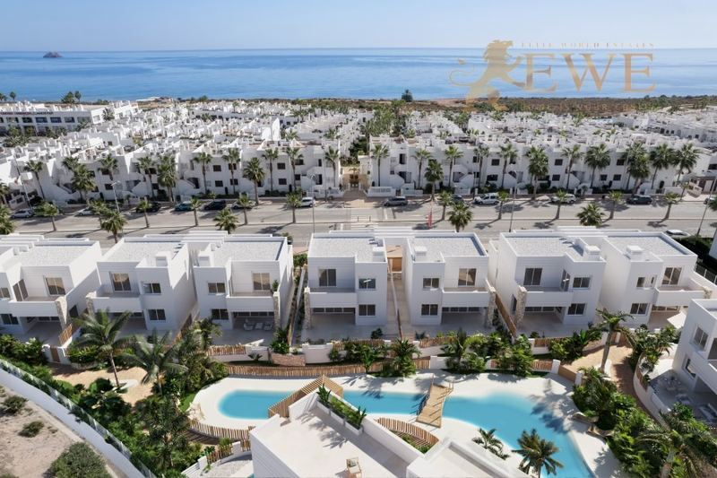
Fertigstellung Dez 2026Pulpí
Modern villa 300 metres from the sea in Pulpí
479.000 €
3 Schlafzimmer · 4 Bäder · 254 m²Ref. EWE3615
Die Stadt
Leben in Pulpí
Pulpí ist eine Gemeinde im Norden der Provinz Almería in Andalusien, an der Grenze zur Region Murcia. Ihre Küste rund um San Juan de los Terreros hat ruhige Strände, kleine Buchten und klares Wasser und gehört zu den am wenigsten überlaufenen Teilen des spanischen Mittelmeers.
Bekannt ist die Gegend für die Geoda de Pulpí, eine der größten Kristallgeoden der Welt, die in einer alten Mine gefunden wurde und besichtigt werden kann. An der Küste stehen die Burg von San Juan de los Terreros und der Vulkanfelsen Isla Negra.
Das Leben ist ruhig, das Klima trocken und sonnig, und die Preise gehören zu den niedrigsten an der Küste. Der Flughafen Región de Murcia ist mit dem Auto etwa eine Stunde entfernt, der Flughafen Almería etwa anderthalb Stunden, und Águilas mit mehr Geschäften und Versorgung etwa 15 Minuten.
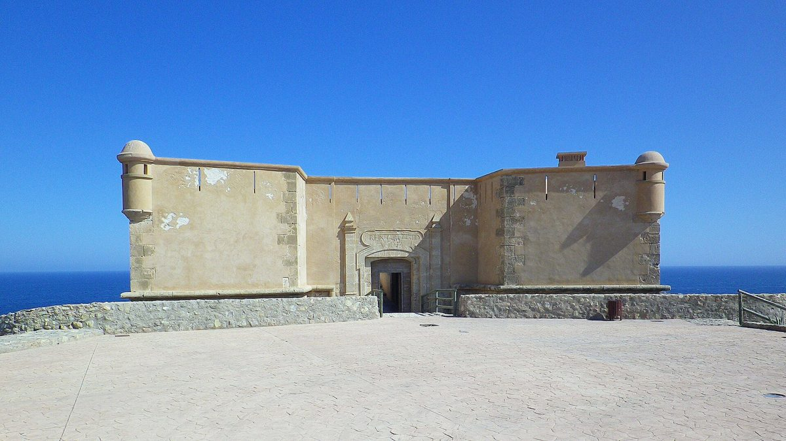
Wo kaufen
Die wichtigsten Viertel von Pulpí
San Juan de los Terreros
Der Küstenort von Pulpí, mit Stränden, Buchten und der Burg. Wohnungen und Bungalows nahe am Meer.
Erste Meereslinie
Wohnungen direkt am Meer, mit Blick über das Wasser und den Strand darunter.
Golfgebiet
Neue Anlagen neben dem Golfplatz, wenige Minuten vom Strand. Wohnungen mit Pool und Gärten.
Ort Pulpí
Der Ort im Hinterland, mit Läden, Versorgung und dem Besucherzentrum der Geoda.
Budget
Was der Kauf in Pulpí kostet
Zum Kaufpreis kommen Steuern und Gebühren. Für eine neue Immobilie zu 229.900 € sind das zum Beispiel 22.990 € Mehrwertsteuer und 2.759 € Stempelsteuer, dazu Notar, Grundbuch und Anwalt. Für Bestandsimmobilien gelten andere Steuern, fragen Sie uns also immer nach der genauen Summe für die Immobilie, die Ihnen gefällt.
| Neubau | 10 % Mehrwertsteuer (IVA) + 1,2 % Stempelsteuer (AJD) |
|---|---|
| Bestandsimmobilie | 7 % Grunderwerbsteuer (ITP) |
| Notar, Grundbuch, Anwalt | ca. 1,5–2,5 % des Preises |
| Jedes Jahr | Grundsteuer IBI und Gemeinschaftskosten, je nach Immobilie |
Fragen
Immobilienkauf in Pulpí: Fragen und Antworten
Was kostet eine Wohnung in Pulpí?
Unsere Wohnungen in Pulpí beginnen heute bei 179.000 €, die meisten mit 1 bis 3 Schlafzimmern kosten zwischen 180.000 € und 330.000 €. Bungalows und Doppelhaushälften nahe am Strand gibt es ab etwa 360.000 €, Villen ab etwa 480.000 €.
Was ist die Geoda de Pulpí?
Eine riesige, mit klaren Gipskristallen ausgekleidete Höhle, gefunden in einer alten Mine bei Pulpí und eine der größten bekannten Geoden. Sie kann mit Führung besichtigt werden.
Wie weit ist Pulpí vom Flughafen entfernt?
Der Flughafen Región de Murcia ist mit dem Auto etwa eine Stunde entfernt, der Flughafen Almería etwa anderthalb Stunden. Zum Flughafen Alicante-Elche sind es etwa eine Stunde und 50 Minuten.
Welche Kosten kommen zum Kaufpreis hinzu?
In Andalusien zahlen Sie bei einem Neubau 10 % Mehrwertsteuer und 1,2 % Stempelsteuer, bei einer Bestandsimmobilie 7 % Grunderwerbsteuer. Notar, Grundbuch und Anwalt kosten zusammen etwa 1,5–2,5 %.
Können Ausländer in Pulpí eine Immobilie kaufen?
Ja. Jeder kann in Spanien eine Immobilie kaufen. Sie brauchen eine spanische Steuernummer (NIE) und meist ein spanisches Bankkonto, und wir helfen Ihnen bei beidem. Mehr dazu in unserem Ratgeber zur NIE-Nummer.


Sie suchen ein Zuhause in Pulpí?
Nennen Sie uns Ihr Budget und Ihre Wünsche. Wir antworten innerhalb eines Werktags, auf Deutsch, Englisch, Spanisch oder Polnisch.